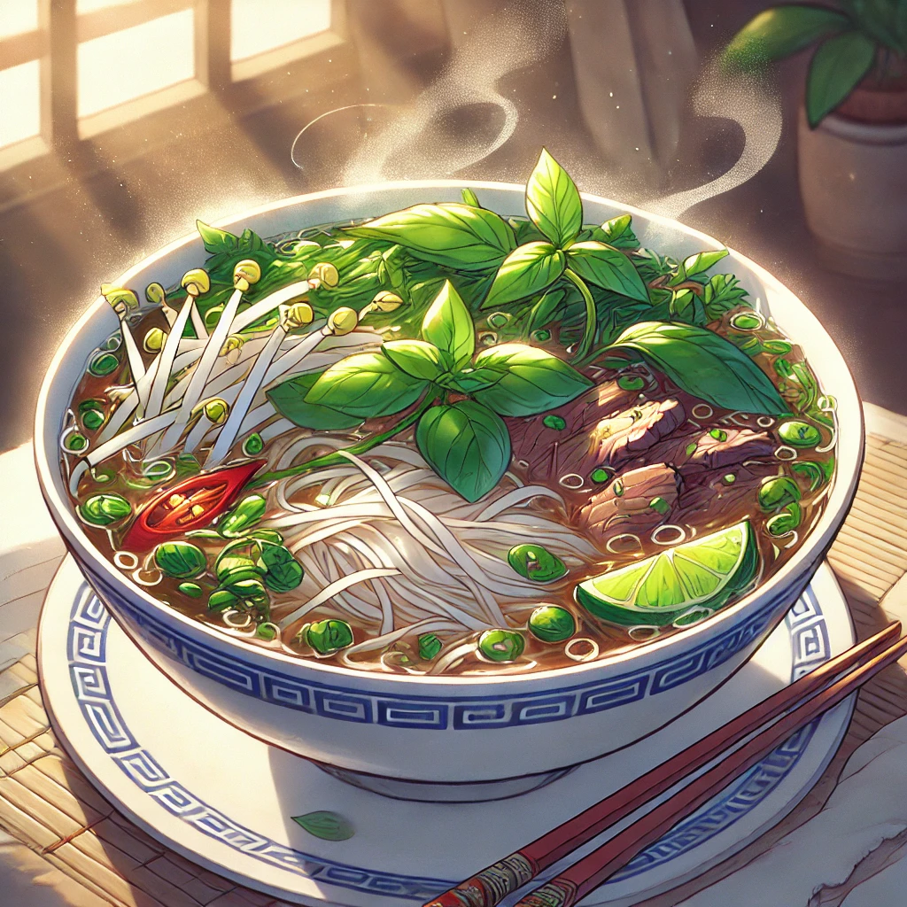

Pho

Description
This pho recipe brings a cozy and aromatic bowl of Vietnamese noodle soup to your kitchen. Filled with rice noodles, tender meat or tofu, fresh herbs, and a savory broth, it’s both warming and refreshing.
Ingredients
- 14 cups beef or chicken broth
- 1-2 oz rice noodles
- Thinly sliced beef, chicken, or tofu (your choice)
- Fresh herbs: basil, cilantro, and green onions
Steps
- In a pot, heat the broth to a gentle boil. If you want extra flavor, simmer with star anise, cinnamon stick, and ginger for 10-15 minutes, then remove before serving.
- In a separate pot, cook the rice noodles according to package instructions. Drain and set aside.
- Place the cooked noodles in a bowl, and top with your protein choice (raw beef slices, cooked chicken, or tofu).
- Carefully ladle the hot broth over the noodles and protein. For thinly sliced beef, the broth should be hot enough to cook it upon contact.
- Garnish with fresh herbs, bean sprouts, lime, and chili slices. Add hoisin sauce or sriracha if desired.